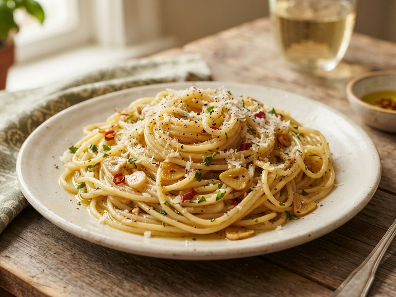

Espaguete Alho e Óleo
Um prato clássico, fácil e rápido de preparar, perfeito pra qualquer ocasião.
Tempo de preparo: 10 minutosIngredientes
- 200g de macarrão
- 2 dentes de alho picado
- Azeite de oliva
- Sal e pimenta a gosto
- Queijo parmesão ralado (opcional)
Modo de Preparo
- Cozinhe o macarrão conforme as instruções da embalagem.
- Enquanto o macarrão cozinha, aqueça o azeite numa frigideira e refogue o alho até dourar.
- Escorra o macarrão e misture com o alho e o azeite na frigideira.
- Tempere com sal, pimenta e queijo parmesão, se desejar.